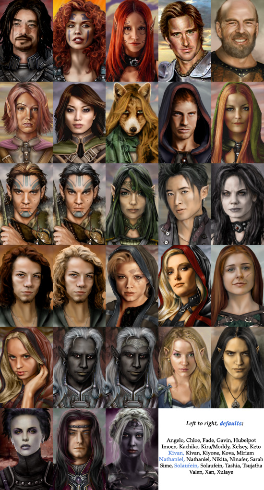

 Minor:

This will upgrade various BioWare and player-made NPCs so they have a somewhat "standardized" look - similar head sizes, color range, and an attempt to be semi-faithful to the original BioWare artwork style. It also fixes a bug with Illasera's race, allows you to restore Sarevok's original portrait if playing "Tortured Souls" and patches certain .cre files so that avatar and paperdoll skin and hair colours more closely match their new portraits. It is strongly recommended that you install any other portrait or tweak mods before using this pack. You do NOT need to start a new game to use this mod. You can see all included portrait upgrades in this document; mods that have been adjusted in this pack are listed visually in section III and alphabetically in section VI.
Known Issues:The installer will not work properly with the Mac version of BG2 (it will work, though, if you use the Windows version through Wine)! You should still be able to manually install this pack if you are comfortable with your machine, by editing eportraits/lib/patch_exe.tpa; you'll find instructions for that inside that file.
To install the portraits, unzip this pack to your Baldur's Gate II directory and run the file setup-eportraits.exe. Customize your installation by selecting to [A]sk about each component. Whether selecting individual portraits or batch installing many, you have the option to copy all unused portraits from this pack to the portraits folder (allowing you to choose them for your PC if you wish). Be aware that batch-installing NPCs will present my arbitary portrait selections as defaults. Some BG1 (BGT) characters will only receive a modified portrait if the relevant component from the BG1NPC mod is installed. This applies to Edwin, Imoen, Jaheira, Viconia, Kivan and Minsc. You will always be able to choose which version of Xan you want to use.
If you only want to update your saved games, you can do it in the following ways:
Not all BioWare NPCs were replaced; I felt some artwork was good enough as is. Replacing a default BioWare portrait will also automatically use the new portrait with any mod that utilizes that default NPC. Please note that the default choices in a batch install are not always lore-correct (Edwin, Jaheira). If an NPC portrait has changed drastically, the default BioWare image will be backed up to your portrait directory automatically.
The Special Case of Minsc: depending on what you decide to do with Minsc's portrait, you will be presented with differing selections for Minsc's "image" during PC character creation. This is for the eventual case that you want to use Minsc's portrait for your PC. The biggest change you will notice is that using Minsc's face will result in a hamster-less portrait for your PC. This will NOT affect in-game Minsc at all - whether you choose to install Minsc's alternative portrait or not, the NPC Minsc will always be holding Boo.
Future versions of this mod will include alternatives to more vanilla BG1 NPCs as well.

Mod NPCs include alternative portraits for several joinable companions created by player mods. Most original mod portraits will be backed up to your portrait directory automatically. Note that some minor NPC mods require the use of their default BioWare NPC alternates as well (Anomen, Edwin, Minsc, etc). Mod NPCs also include portraits for several minor NPCs which are not playable (at least, not permanently), however they do still receive small portraits in the game. If you are using, for example, the "Unfinished Business" pack and you embark on Minsc's sidequest, installing these portraits will keep you from wondering why Minsc suddenly turns white, hairless and tattooed for the duration of the quest. Many of these images were created on request. If you have a request for an NPC not covered in this pack, post in the forum and I may append your request to the next version of this pack (if I have the time).
The Anti-Multiples Initiative: If a request is made for a mod which contains a portrait using Jude Law as the default image, it will automatically be included in the next version. The same holds for mod NPCs that recycle popular artwork, including minor NPC portraits!
These are the original NPCs included in the pack. See section VI to download any of these NPC mods.
This project would not have been possible without the hard work of many other artists besides myself, some of whose identities have been lost to obscurity. If you spot an uncredited artwork in this portrait pack, please e-mail me and let me know so the original artist can be given his or her full due.
The Baldur's Gate I portrait artist is Mike Sass; the Baldur's Gate II portrait artists are Matthew Goldman, Todd Grenier, Marc Holmes and Dean Anderson. Their work is the base for many edits in this pack.
All works were cropped, edited, photomanipulated, retouched, painted or otherwise played with by myself unless listed below. Starred (*) credits are images of well-known individuals taken from search engine trawling.
| Aerie | JPS (chest) |
| Angelo | * Takashei Kaneshiro / * Andy Lau |
| Anomen | Miloch |
| Anomen (beardless) | Miloch + Cliffette |
| Balthazar | Katanaz-Stock |
| Barvon | unknown |
| Bodhi | collaboration with MiLeah |
| Cernd | Miloch |
| Chloe | * Anna Lynne McCord / Lagueuse (armor) |
| Colours of Infinity | MichaelO, NWN artwork, Portrait Portal |
| Dekkie | unknown |
| Edwina | La-Esmeralda-Stock |
| Ellesime | * Michelle Pfeiffer, Marcus Ranum (clothing), Mythical Masks |
| Elvira | unknown |
| Fade | * Bianka Beauchamp |
| Gavin | MiLeah |
| Hubelpot | * Bruce Willis / Lagueuse (armor) |
| Illasera | * Olivia Wilde |
| Jaheira (lore) | Lagueuse (armor) |
| Jan | Miloch |
| Kari | Seductive-Stock / Voivodess-Stock |
| Kachiko | * Ebihari Yuri |
| Keldorn | Miloch |
| Kelsey | Katanaz-Stock |
| Keto | mizzd-stock |
| Kivan | * Jonathan Rhys-Meyers / GIN7GIN8 (bow) |
| Black-Haired Kivan | AvengingExile (edits) |
| Kiyone | * Björk |
| Kova | * Ren Quan |
| Mazzy (platemail) | Amaurea (platemail) |
| Minsc (no Boo/fake Boo) | Cliffette (Boo edits) |
| Miriam | * Michelle Monaghan |
| Nathaniel | Sifra-stock |
| Neilos | * Kevin Sorbo |
| Nikita | * Petra Wilson |
| Ninafer | Bugidifino |
| Otako | unknown |
| Red Lich | unknown |
| Red Wizard 1 (male) | xtwizx-Stock |
| Red Wizard 2 (male) | * Edward Norton, Portrait Portal |
| Red Wizard 3 (female) | GlamourousAcid-Stock / faestock |
| Reject Kelsey | Silverdawn (face and armour) |
| Rhilato | Katanaz-stock, AshenSorrow (texture) |
| Sarah | Fairiegoodmother, Lagueuse (armor) |
| Sarevok | MiLeah |
| Sawara | * Hiroyuki Sanada |
| Seasnake | DarkladyStock |
| Sendai | madqueenstock / La-Esmeralda-Stock / mizzd-stock |
| Sime | faestock |
| Skullen Crossbones | Cover art, "The Savage Knight" by Paul Lewis |
| Solaufein | * Keanu Reeves |
| Suna Seni | * Elisha Cuthbert |
| Suu | * Aoi Miyazaki |
| Tashia | ISOStock |
| Tenft | * Ambrose Burnside |
| Tsujatha | * Robert Patterson |
| Valen | * Charlize Theron |
| Valygar | Miloch |
| Valygar (short hair) | Sanctifer |
| Viconia | Miloch |
| Xan | * Jude Law |
| Xulaye | ISOStock |
| Yoshimo | MiLeah |
Special thanks to Turambar for rewriting the code.
Special thanks to Miloch for providing tutorials and assistance with coding.
Special thanks to Lava Del'Vortel and K'aeloree for originally packing the mod.
Special thanks to Spellhold Studios for their support, feedback and hosting.
Special thanks to Westley Weimer, godfather of WeiDU and serious BG2 modding.
Special thanks to all those who continue to maintain WeiDU/BiggDU to this day.
Special thanks to the BG2 modding community, for making these NPCs available!
This portrait pack is not developed, supported, or endorsed by BioWare or Interplay/Black Isle.
REDISTRIBUTION NOTE: This portrait pack was created to be freely enjoyed by all Baldur's Gate 2 players. However, this pack may not be sold, published, compiled or redistributed in any form without the consent of its author. If you want to use any of these portraits in a new mod or repack the existing portraits with your own image tweaks, please ask for permission first. MOD AUTHORS: If you want to include this version of your own mod's portrait in your next upgrade, you have implicit permission to use my artwork. Check the _extras folder if you need a 210x330 sized image of your character for ToB and can't find one.
2.0: 27 March 2012: Additional BioWare and Mod portraits, updated code, bugs fixed, .cre file changes, portrait backups, cross-platform compatibility, BWP/BGT compatibility, save game updater 1.0: 07 January 2012: Initial Release